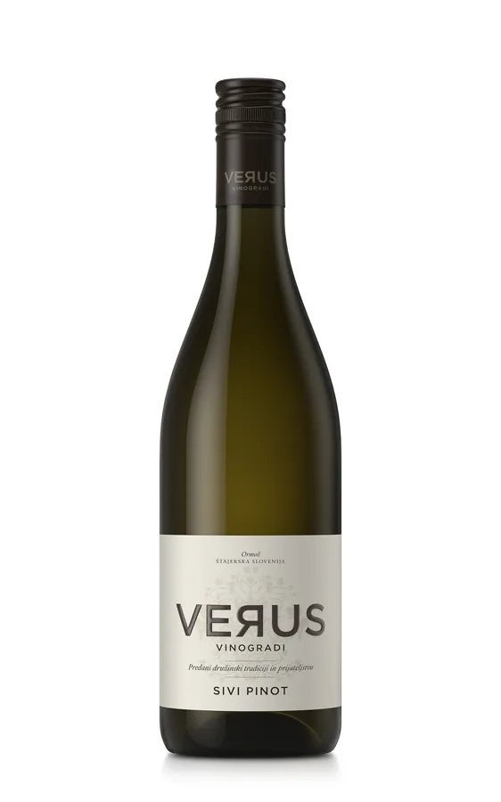
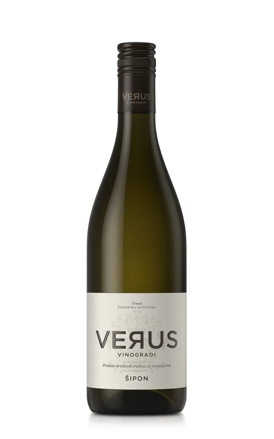
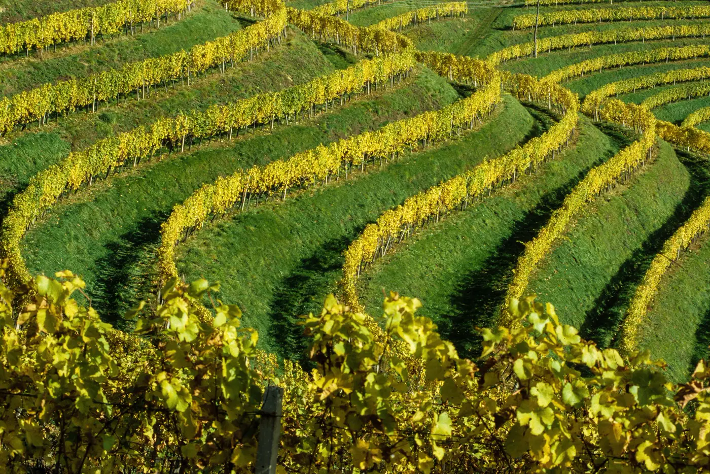
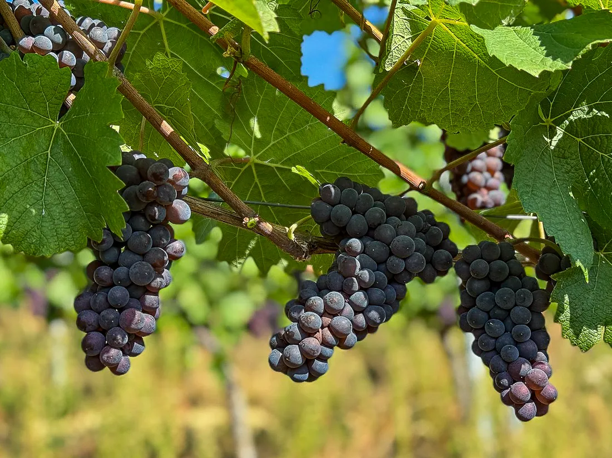
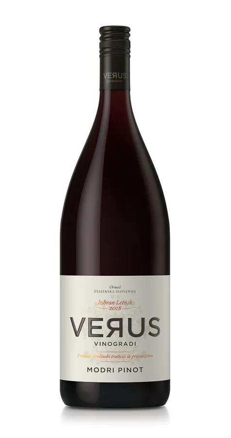
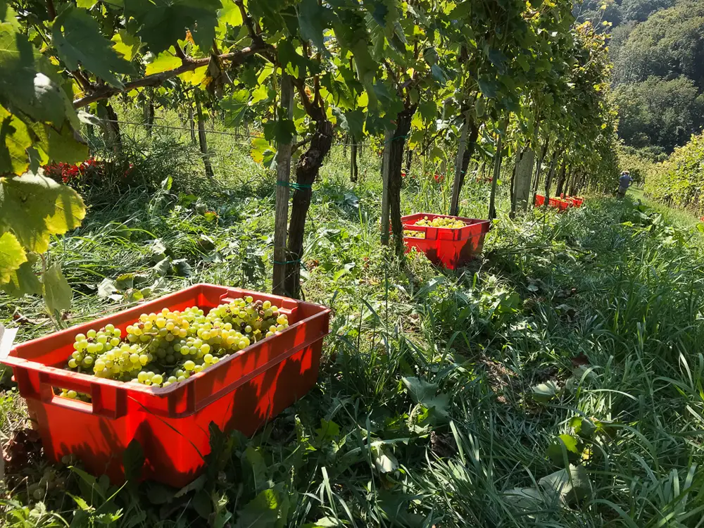
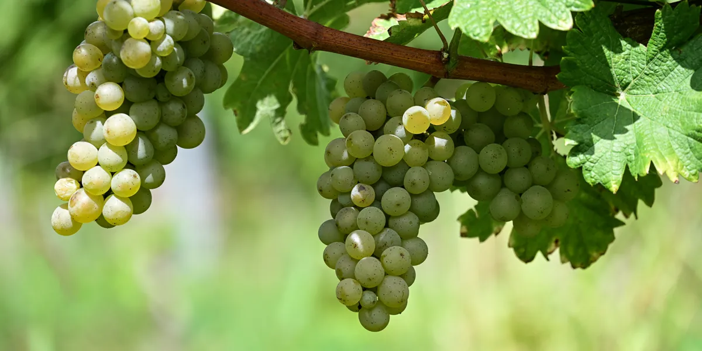

Verus pomeni pravi, resničen, dejanski, tudi iskren, pristen, nenarejen, pošten. Vselej se zavzemamo za tak odnos do vseh in želimo, da so taka tudi naša vina.
S svojim znanjem in natančnim delom v vinogradu in kleti pridelujemo vina, ki resnično izražajo lastnosti sorte, letnika in našega vinorodnega okoliša.






Naši vinogradi se razprostirajo med Dravo in Muro ter mestoma Ormož in Ljutomer. To je najtoplejši in najbolj suh del Štajerske. Tla so lahka, peščeno-ilovnata, lapornata in dobro odcedna; prevladujejo sivi laporji in apneni peščenjaki.
Na karakter vina odločilno vplivajo sončni, vetrovni dnevi in hladne noči v času dozorevanja grozdja. Sonce sije 2600 do 2800 ur na leto, padavin je od 900 do 1000 mm.

Pridelujemo zrela, harmonična vina z intenzivno cvetico in jasno izraženo sortnostjo. So značilen predstavnik vinorodnega okoliša, sorte in letnika.
Letniki 2021 do 2025
Naša najstarejša sorta, pri nas že več kot 1000 let. Vino z edinstveno nežno cvetico, ki spominja na kutine, hruške ali limone; polnega okusa, s prijetno svežino, in se odlično stara.
Letniki 2021 do 2025
Vonj po bezgovem cvetju, kosmuljah, tropskem sadju, koprivah, papriki, črnem ribezu ali pokošeni travi. Vino je sveže, harmonično in polnega okusa.
Letniki 2021 do 2025
Mlado vino ima svežo sadno aromo vinogradniške breskve in akacijevega cvetja. S staranjem se tvorijo kompleksnejše arome medu, cimeta ali suhih marelic.
Letniki 2021 do 2025
Prijetna cvetica, v kateri se prepletajo nežne cvetlične arome in tropsko sadje. Okus je bogat in poln.
Letniki 2021 do 2025
Mamljiva sadna cvetica, ki lahko spominja na jabolka, hruške, melone, ananas, banane ali agrume. V okusu polno in elegantno.
Letniki 2021 do 2025
Izjemno aromatično in bogato vino z značilno cvetico po muškatu in pomarančah.
Letniki 2016, 2017, 2019, 2020
Naša edina rdeča sorta. Rubinasto rdeča barva, cvetica malin, jagod, češenj ali ribeza, skladen, poln, zrel okus.

Za vsak letnik
Na vaši strani so tehnični listi (PDF) za vsak letnik vsakega vina. V prenovi jih ohranimo pri posameznem vinu.


Nekateri letniki izstopajo tako, da si zaslužijo posebno pozornost. Šipon 2021 je napolnjen v 0,75 l in 1,5 l magnum steklenice, modri pinot 2018 le v 1,5 l magnum steklenice. Serija od oktobra 2024.
Preprečuje erozijo na strmih pobočjih in omogoča rastišče, kjer trta pri zmernem pridelku ne potrebuje gnojenja.
Dobra osončenost in zračnost listne stene, uravnotežena rast, količinsko zmeren pridelek.
Na najbolj strmih legah terase z 2.000 trsi/ha, na nagibih pod 30 % vertikalni vinogradi s 4.000 trsi/ha.
Popolnoma zrelo in zdravo grozdje v majhnih zabojih, ohlajeno, v klimatiziranem vozilu. Pridelek 6 do 8 t/ha.


Zima je bila blaga. Sedmega aprila so se temperature v dolinah spustile pod ledišče, na višjih legah, kjer so naši vinogradi, pa so ostale tik nad 0 °C, zato spomladanske pozebe ni bilo. Trgatev je potekala v lepem vremenu in brez težav. Grozdje je bilo zdravo in optimalno dozorelo pri vseh sortah, pridelek količinsko nekoliko večji kot v preteklih letih.
Z vaše strani Letniki; arhiv zapisov od 2021 naprej ostane v prenovi.
Združili smo družinske vinograde, znanje in delo ter spomladi 2007 v prostorih nekdanje pekarne opremili vinsko klet. Že naši starši in stari starši so bili tesno povezani z vinogradi in vinom.


Mejniki po navedbah podjetja (verusvino.com/novice). Matična številka 5585511000, v sodnem registru od 2. 4. 1992 (bizi.si).
Čudovita sortnost, tako čista in močno izražena! Kot eksplozija zrelih grozdnih jagod v ustih. Izjemna harmonija in vitalnost. Pravo poletno vino.
Čeprav je suh, ima cvetlični značaj, ki ga doslej nisem še nikjer srečala. To vino je lahko popoln aperitiv, odlično se poda tudi k lažjim jedem, kot je perutnina ali solata s kozicami.
Bogat, pikanten in prijeten okus, prepričljiva sadnost in svežina.
Citati so povzeti z vaše strani Objave (verusvino.com/objave). Po navedbah podjetja je Verus naveden v 7. izdaji The World Atlas of Wine (2013).
Vodeni ogledi kleti z degustacijo so na voljo ob predhodni najavi in rezervaciji termina. Verus vina najdete tudi v številnih vinotekah in restavracijah v Sloveniji in, po navedbah podjetja, v več kot 20 drugih državah.
Verus Vinogradi d.o.o.
Ljutomerska cesta 36, 2270 Ormož
+386 (0)2 7415 440 · info@verusvino.com
Najava ogleda po e-pošti